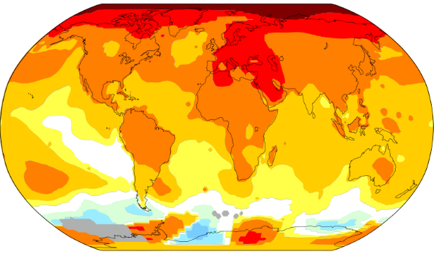

Visualisation
Global Temperature Changes

42°C (Summer)
36.7°C (Late Spring)
47.8°C (Summer)
Most heatwave prone zone
Sydney
Shanghai
Phoenix
South Asia
Below −1.0
−1.0 to −0.5
−0.5 to −0.2
−0.2 to +0.2
+0.2 to +0.5
+0.5 to +1.0
+1.0 to +2.0
+2.0 to +4.0
Above +4.0
Activism
Significant Climate Activism around the World
Important city
Upcoming activism region
Excellence Points
I designed custom marker icons and provided informative overlays and popups for each map. Additionally, I styled the static map overlays to be responsive and layered them accurately using CSS.